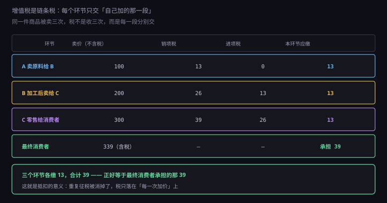
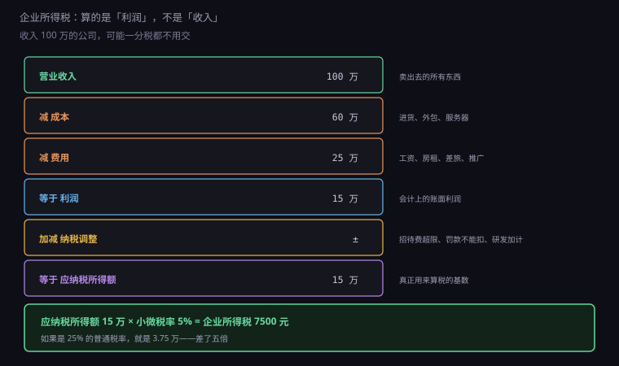

约 0.32 万字 · 3 张图 · 开票收 10600，能花的是 10000，还要再交一次税
先看一张发票的结构。它只有三个数字： 不含税金额、税率、税额，加起来是价税合计。
以 10600 元、6% 税率为例： 不含税金额 10000，税额 600，价税合计 10600。
那 600 元从来不是你的收入。 它是你替税务局向客户收的，只是借你的手转交。 所以会计上它不进"收入"，进"应交税费"。
而 10000 元是你的收入。它要减去成本、费用， 剩下的利润再交一次企业所得税。
这就是很多人算错的地方： 把 10600 当成收入，然后奇怪"为什么交完税没剩多少"。 实际能用的只有 10000，而且这 10000 里还有成本。
价外税的意思是：税不包含在标价里，是标价之外另收的。
你在超市看到"9.9 元"，那是含税价，小票上会写"其中税额 1.14 元"。 但企业之间报价，习惯报不含税价，然后另加税额。 所以合同里必须写清楚："本报价为含税价 / 不含税价"， 否则将来扯皮。
价外税的关键在于谁真正承担。
法律上，增值税的纳税人是"销售方"——也就是你。 但经济上，这笔税会通过价格转嫁给买家， 一路转到最终消费者头上。
所以企业只是"代收代缴"的角色： 你从客户那收 600，交给税务局，自己一分不留。 真正掏钱的是最后一个买东西自己用的人。
这也解释了为什么企业之间特别在意"能不能开专票"： 开了专票，买家可以拿这 600 去抵它自己要交的税， 相当于这 600 从"成本"变成了"可抵扣的进项"。 开不了专票，这 600 就是实打实的成本。
增值税最精妙的设计在这里。

假设一件商品的旅程是这样的：
A 卖原料给 B，100 元，税 13。
B 加工后卖给 C，200 元，税 26。
C 零售给消费者，300 元，税 39。
如果每一段都按全额交税，总共收 13 + 26 + 39 = 78， 而商品只增值到 300，税率名义上是 13%， 实际税负却变成了 26%。这叫重复征税。
抵扣制解决了这个问题：每个环节只交"销项减进项"的差额。
A：销项 13，进项 0，交 13。
B：销项 26，进项 13（A 开给它的专票），交 13。
C：销项 39，进项 26，交 13。
三家一共交 39，正好等于最终消费者承担的那 39。 商品从 0 增值到 300，总增值 300，按 13% 应该是 39。 一分不多，一分不少。
所以"增值税"这个名字是准确的： 它只对每一个环节新创造的价值征税。 买进来的东西已经交过税了，凭票抵扣，不重复收。
理解这一点，你就明白为什么企业会拼命要进项票： 没有进项票，就等于放弃了抵扣， 本该只交"增值部分"的税，变成了按"全额"交。
也明白为什么"虚开专票"是重罪： 它凭空制造了一个不存在的进项，用来骗抵扣， 等于直接从国库拿钱。这是刑法第二百零五条， 最高可以判无期。
增值税的税率不是一档，是按行业分的：
| 税率 | 适用范围 |
|---|---|
13% | 销售货物、加工修理修配、有形动产租赁、进口货物 |
9% | 交通运输、邮政、基础电信、建筑、不动产租赁与销售、农产品 |
6% | 现代服务（含软件、设计、咨询）、金融、生活服务、无形资产转让 |
0% | 出口货物、跨境应税行为（另有退税政策） |
3% | 小规模纳税人的征收率（目前减按 1% 执行） |
做软件、做技术服务，一般纳税人适用 6%。 这是技术创业者最常遇到的一档。
注意区分"税率"和"征收率"： 税率是一般纳税人用的，配合进项抵扣； 征收率是小规模纳税人用的，直接按销售额乘，不能抵扣。
小规模纳税人目前的优惠是：3% 减按 1% 征收， 而且月销售额 10 万以下（季度 30 万）免征增值税。 这个政策对刚起步的小公司很友好—— 一年做几十万生意，可能一分增值税都不用交。
这个换算必须记牢，报错价会很尴尬。
不含税价 × (1 + 税率) = 含税价
含税价 ÷ (1 + 税率) = 不含税价
不含税价 × 税率 = 税额
举个最常见的错误：报价 10000 元含税，想算税额， 直接 10000 × 6% = 600，然后报"不含税 9400"。 错了。
正确算法：10000 ÷ 1.06 = 9433.96， 税额 = 9433.96 × 6% = 566.04。 如果你按 600 报，等于自己多承担了 34 块的税。
金额小看不出，金额大就是几千块。 所以谈合同时一定要写清楚： "本合同金额为含税价，税率 6%"或者 "不含税价 X 元，税额另计"。 不写清楚，将来税率变了、政策变了，就是一场官司。
顺带把专票和普票的区别说清，这两个词天天出现，很多人一直混着。
增值税专用发票：票面上把金额和税额分开列， 买家可以拿它抵扣进项。只有一般纳税人能抵， 而且必须是跟经营相关的支出。
增值税普通发票：同样列金额和税额， 但买家不能抵扣（少数特殊凭证除外，比如通行费电子普票）。 它的作用是"证明这笔支出真实发生"，用于企业所得税前扣除。
所以对客户来说，专票是"能省钱的票"，普票是"能入账的票"。 你要报价时，先问一句"您需要专票还是普票"， 因为这直接决定你的身份选择（下一节细讲）。
还有个变化要知道：小规模纳税人现在也能自开专票了 （2020 年起全面放开），不用再跑税务局代开。 但开的是 1% 或 3% 的专票，对方只能按这个税率抵扣， 跟一般纳税人开 6% 的效果不一样。
这是第二种税，跟增值税完全无关，算的是另一件事。

计算路径是这样的：
收入 - 成本 - 费用 = 利润
利润 ± 纳税调整 = 应纳税所得额
应纳税所得额 × 税率 = 企业所得税
注意第一行：收入减的是成本和费用， 不是"收入直接乘税率"。 一家收入 100 万、成本 60 万、费用 25 万的公司， 利润只有 15 万，交税按 15 万算，不是按 100 万。
如果成本费用超过了收入，利润是负的，那就不用交， 而且亏损还能在以后五年内弥补（用以后的利润抵）。 所以"收入高"不等于"税多"，"不赚钱"就真的可以不交。
税率上，法定是 25%。但有小微企业优惠： 年应纳税所得额不超过 300 万的部分， 减按 25% 计入应纳税所得额，再按 20% 税率， 实际税负 5%。
15 万的利润，按 5% 只要交 7500 元； 按 25% 要交 3.75 万。差五倍。 所以绝大多数小微企业实际税负远低于名义税率。
会计算出来的利润，跟税务局认可的"应纳税所得额"，经常不一样。
原因是有些支出，会计上可以列，税务上不认。
业务招待费：只能按发生额的 60% 扣除， 且不超过当年营业收入的 5‰。 你请客户吃饭花了 10 万，收入 100 万， 能扣的是 min(6 万, 5000 元) = 5000 元，剩下 9.5 万要加回来交税。
罚款和滞纳金：行政罚款（比如交通违章、市场监管处罚） 不能在税前扣除。你被罚了 10 万，这 10 万要从利润里加回来。
超标的三费：职工福利费超过工资总额 14% 的部分、 工会经费超过 2% 的部分、职工教育经费超过 8% 的部分，都要调整。
研发费用加计扣除：这是反向的，能让你少交税。 企业投入的研发费用，除了据实扣除， 还可以再按 100% 加计扣除（相当于 1 块钱当 2 块扣）。 做软件的公司一定要用这条政策。
所以"利润"和"应纳税所得额"是两个数， 中间隔着一堆调整项。 这也是为什么代理记账每个月要你交一堆发票和单据—— 它在算这个调整。
把三种税串起来算一遍，你就有感觉了。 假设一家小公司年收入 50 万（含税），成本 10 万，费用 20 万。
如果是小规模纳税人： 季度收入 12.5 万，没超过 30 万免征额，增值税为 0； 附加税跟着增值税走，也是 0。 利润 = 50 ÷ 1.01 − 10 − 20 ≈ 19.5 万， 企业所得税按 5% 交约 9750 元。 全年总税负不到一万。
如果是一般纳税人（6%）： 销项 = 50 ÷ 1.06 × 6% ≈ 2.83 万； 成本 10 万如果拿到 13% 的专票，进项 ≈ 1.15 万； 应缴增值税 1.68 万，附加税约 2000 元。 利润 ≈ 18.3 万，企业所得税约 9150 元。 全年总税负接近 2.8 万。
差了近三倍。那为什么还有人愿意做一般纳税人？ 因为能开 6% 的专票。 你的客户如果是企业，它拿这张票能抵 6%， 相当于你的报价里有一部分可以帮它省税。 这时候你贵一点它也愿意——因为它整体成本更低。
这就是税制在商业里的真实作用： 它不只是一个你要交多少钱的问题， 还是你的客户愿不愿意跟你做生意的问题。
除了两大主力，还有几个小税种，金额不大但不能漏。
附加税：包括城市维护建设税、教育费附加、地方教育附加。 它们的计税依据是你实际缴纳的增值税额，不是收入。
税率：城建税按地区分 7%（市区）、5%（县镇）、1%（其他）； 教育费附加 3%；地方教育附加 2%。 合计大约是增值税的 12%（市区）。
所以增值税交 600，附加税大约是 72。 小规模纳税人还有"六税两费"减半的优惠，实际更低。
个人所得税：公司要替员工代扣代缴工资个税。 税率 3% 到 45% 超额累进，起征点每月 5000（专项附加扣除另算）。 即使员工工资不到起征点，也要做"零申报"。
股东分红要交 20% 的股息红利个税。 个体户和独资企业交的是"经营所得"个税，5% 到 35%。
印花税：对合同、账簿、证照收的税。 买卖合同按金额的万分之三，借款合同万分之零点五， 营业账簿按实收资本的万分之二点五。 金额小，但签了大合同别忘了。